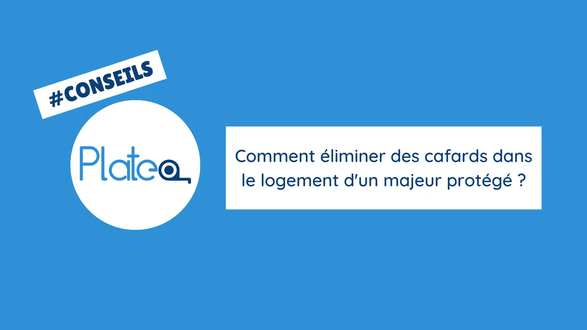

Vous êtes MJPM ? Un Majeur Protégé a des problèmes de cafards ?
La présence de cafards dans un logement peut être un problème désagréable et préoccupant.
Dans cet article, nous aborderons l'importance d'éliminer les cafards dans un logement, les risques pour la santé et le bien-être de l’occupant.
Nous allons également voir quelles mesures à prendre pour assurer un environnement sain et sécurisé.
Les risques
Les risques liés à la présence de cafards dans le logement sont nombreux.
Du point de vue de la santé, ceux-ci sont porteurs de bactéries, de virus et d'allergènes, pouvant causer ou aggraver des problèmes respiratoires et déclencher des réactions allergiques.
Pour une personne dont la santé est déjà fragile, ces risques peuvent être particulièrement préoccupants.
Outre les risques pour la santé physique, la présence de cafards peut également avoir un impact psychologique sur les bénéficiaires.
La peur, le stress et l'anxiété liés à l'infestation de cafards peuvent affecter la qualité de vie et le bien-être général.
Les mesures à prendre pour éliminer les cafards
Pour éliminer les cafards d'un logement, il existe plusieurs mesures que les occupants ou les intervenants peuvent prendre. Voici quelques conseils pratiques :
Identification de la source
Il est important de rechercher les signes de présence de cafards tels que les excréments, les odeurs caractéristiques ou les traces de morsures sur les aliments.
Cette identification permet de localiser la source de l'invasion et de mieux cibler les actions à entreprendre.
Mesures d'hygiène strictes
Il est primordial de maintenir une hygiène rigoureuse afin de se débarrasser des cafards.
Il est recommandé d'effectuer un nettoyage régulier des surfaces, de stocker les aliments dans des récipients hermétiques et de s'assurer de l'élimination rapide des déchets.
En privant les cafards de nourriture et de cachettes, vous pouvez réduire leurs chances de survie et de multiplication.
Utilisation de pièges à cafards
L'utilisation de pièges à cafards peut être bénéfique.
Il est recommandé de les placer stratégiquement dans les zones où la présence de cafards est constatée.
Ces pièges contiennent des appâts attractifs qui attirent les cafards et les capturent.
Ils peuvent être achetés dans les commerces spécialisés.
Utilisation d'insecticides spécifiques
Les insecticides spécialement conçus pour éliminer les cafards peuvent être utilisés.
Il est recommandé de suivre attentivement les instructions du fabricant et de prendre les précautions nécessaires lors de leur utilisation.
Il est également important de respecter les règles de sécurité et de veiller à ne pas contaminer les surfaces en contact avec les aliments.
Colmatage des fissures et des ouvertures
Les cafards peuvent se faufiler à travers de petites fissures et des ouvertures.
Il est donc essentiel de sceller soigneusement toutes les fissures, crevasses et autres points d'entrée potentiels par lesquels ils peuvent pénétrer dans le logement.
Cela limite leur accès et rend l'infestation moins probable.
Prévention de l'humidité
Les cafards sont attirés par l'humidité, il est donc important de prévenir les sources d'humidité dans le logement du majeur protégé.
Il est conseillé de réparer les fuites d'eau dès qu'elles sont détectées et de vérifier qu’il y a une bonne ventilation dans les zones humides comme les cuisines et les salles de bains.
En appliquant ces mesures de manière cohérente et en combinant différentes approches, il est possible de réduire efficacement la présence de cafards dans un logement et de prévenir les infestations à long terme.
Il est important de noter que l'élimination des cafards peut prendre du temps et nécessiter une approche persistante.
Dans les cas graves (Si le traitement ne fonctionne pas)
Si malgré les efforts les infestations de cafards persistent, il est recommandé de faire appel à des professionnels spécialisés dans le traitement des nuisibles.
Ces experts disposent des connaissances approfondies sur les cafards et des outils spécifiques pour éliminer ces nuisibles de manière efficace et sécurisée.
Lorsque vous faites appel à des professionnels du traitement des nuisibles, ceux-ci commenceront par effectuer une évaluation approfondie de l'ampleur de l'infestation et de ses causes sous-jacentes.
Ils identifieront les zones propices à la présence de cafards, y compris les cachettes, les voies d'accès et les sources de nourriture.
Ensuite, les experts mettront en place un plan d'action personnalisé pour éradiquer les cafards.
Cela peut inclure l'utilisation de produits chimiques ciblés et approuvés, l'application de méthodes de traitement spécifiques et l'installation de dispositifs de piégeage appropriés.
Les professionnels du traitement des nuisibles peuvent également vous fournir des recommandations sur les mesures préventives à prendre pour éviter toute réinfestation future.
Parmi les recommandations susceptibles d'être incluses, le professionnel peut donner des conseils concernant l'importance de l'hygiène, la nécessité de sceller les fissures, de réparer les fuites d'eau.
Il pourra également proposer d'autres stratégies visant à rendre le logement du majeur protégé moins propice à la présence de cafards.
Prévention et suivi
La prévention et le suivi continu sont des éléments essentiels pour maintenir un environnement sain et sécurisé, en particulier lorsqu'il s'agit de lutter contre les cafards.
Il est crucial de sensibiliser le majeur protégé aux mesures de prévention des cafards et de l'impliquer activement dans les bonnes pratiques d'hygiène.
Cela peut inclure des conseils sur la manipulation et le stockage appropriés des aliments, le nettoyage régulier des surfaces, l'élimination des déchets de manière adéquate et la mise en place de barrières physiques pour empêcher l'entrée des cafards.
De plus, il est recommandé de procéder à des contrôles réguliers pour détecter tout signe de réinfestation.
Cela peut être réalisé en surveillant attentivement les zones sensibles, telles que la cuisine, la salle de bains et les espaces de rangement.
En cas de réinfestation, il est crucial de réagir rapidement pour éviter la propagation des cafards et minimiser les problèmes potentiels.
Conclusion
La présence de cafards dans un logement occupé par un majeur protégé peut avoir des conséquences sur sa santé, son bien-être et sa qualité de vie.
Il est donc essentiel de prendre des mesures pour éliminer ces nuisibles et prévenir toute réinfestation future.
Pour se débarrasser des cafards de manière efficace, il est recommandé de suivre une approche en plusieurs étapes.
Si malgré tous les efforts déployés, les infestations persistent, il est conseillé de faire appel à des professionnels du traitement des nuisibles. Ces experts disposent des connaissances, des outils et des techniques nécessaires pour éliminer les cafards de manière sûre et efficace.
En prenant ces mesures et en réagissant de manière proactive, il est possible d'éliminer les cafards et de prévenir leur retour.